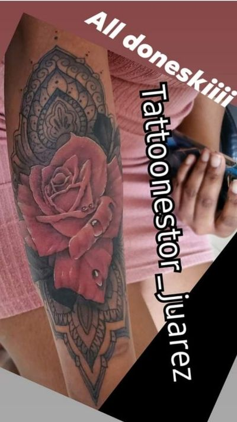

Most cover-up ideas fail for the same reason. You picked the design because you like it, not because it can hold a dark shape. Those are two different questions, and only the second one decides whether the old tattoo disappears.
So this is how I sort cover-ups. Not by style, not by what looked good on somebody's mood board, but by how much old ink the design can swallow before it starts fighting for room. Get that part right and the rest is drawing.
A cover-up is a shadow, not a coat of paint
Tattoo ink is not paint and skin is not a canvas. The pigment sits down in the dermis, under the surface, and when I put new ink over old the two read together. Nothing gets erased. The old piece is still down there under the new one.
Which gives you the working principle for every cover-up I have ever done: the old tattoo has to become a shadow inside the new one. Every dark area in the existing piece needs a reason to be dark in the new design. An eye socket. The underside of a jaw. The deep side of a petal. A carved groove in stone. If I can give the old ink a job in the new picture, it stops reading as a mistake and starts reading as depth.
That also tells you, immediately, why light designs cannot do this work. There is no ink that lifts a dark one. White does not cover black. It sits in it and goes flat and gray, and now you have two problems instead of one.

Cover-up designs ranked by how much old ink they swallow
Here is the sorting, plainly. The middle column is the honest answer about how much existing dark ink a design can take and still look like a finished piece, not a patch job.
| Design type | Old ink it can absorb | What actually does the hiding |
|---|---|---|
| Ornamental blackwork, mandala, filigree | Almost anything | Solid black fields with pattern on top |
| Skull or skeletal work | A lot | Sockets, nasal cavity, deep cast shadow |
| Big cat or heavy animal head | A lot | Dark fur masses, open mouth, shadowed brow |
| Aztec stonework and relief carving | A lot | Carved grooves read as pure black by design |
| Rose cluster with deep shading | A fair amount | The dark between petals, not the petals |
| Florals with heavy negative space | Moderate, and only if placed right | The black behind the flowers, not the flowers |
| Portrait | Limited | Only the shadow side of the face. Faces need clean midtones |
| Script over script | Close to none | Nothing. Letters have gaps and the old letters live in them |
| Watercolor and soft color with no black | None | Nothing. There is no dark value anywhere in it |
| Fine line | None | Nothing. It is line with no mass |
| Anything the same size as the old piece | None | Nothing. Size is part of the coverage |
What actually works
The designs that work all share one trait: large areas of the picture are supposed to be dark, and those areas can be moved around to land where the old ink is. That is the whole list. Style is secondary.
Skulls and skeletal work
A skull is the most useful shape in cover-up work because it is mostly holes. Eye sockets, nasal cavity, the shadow under the cheekbone and the jaw. Those want to be solid black anyway, so I can position the skull on your arm so the sockets land on the darkest part of the old tattoo. Nobody looks at a skull and thinks the eyes are too dark.
Add a crown, a hood, smoke, roses coming off it, and the piece grows in whatever direction it needs to grow to catch the corners of the old work.
Big cats and heavy animal heads
A tiger, a lion, a panther, a wolf. Same reason. An animal head in black and grey Chicano realism has dark fur masses, a shadowed brow, an open mouth that is pure black inside. That is a lot of usable darkness, and unlike a human face, an animal can carry heavy contrast without looking wrong. Push a portrait that dark and it stops looking like the person.
Aztec stonework
Stone relief is built out of shadow. The sun stone, eagle and jaguar carvings, carved serpents, stepped patterns. In real carved stone the grooves are dark because they are deep, so in the tattoo they are allowed to be flat black, and flat black is what hides old ink.
It is also a design language that tiles. If the old tattoo is an awkward shape, I can run the stonework out around it and the composition still makes sense, which is not true of a single centered subject. More of that style is on the Aztec and cultural work page.

Roses and florals, if the shading is real
Roses work, but not for the reason people think. It is not the petals that cover. It is the dark between the petals, the deep throat of the flower, and the leaves and background behind it. A rose drawn light and open covers nothing. A rose with real depth in it covers a lot.
Same with larger floral pieces. If the design is flowers floating on bare skin, it is decoration, not a cover-up. If the flowers sit on a dark ground, now we are working.
Ornamental blackwork and mandalas
This is the heaviest tool available and I do not reach for it first, because it is a commitment. Ornamental blackwork covers close to anything, since large parts of it are solid black by design and the pattern sits on top of that black. If a tattoo is too dark for a skull and fading is not on the table, ornamental is usually the answer that is left.

What almost never works
These come up in nearly every cover-up conversation I have, and the answer is almost always no. Not because they are bad tattoos, but because none of them contain enough darkness to hide anything.
- Fine line. Fine line is line and nothing else. There is no mass to it, so the old tattoo sits right there between the lines, fully visible. Fine line is for blank skin.
- Script over script. People want to replace a name with a different word in the same spot. Letters have gaps and the old letters live in the gaps. Even in heavy blackletter you end up with ghost strokes running through your new lettering at every angle. If lettering has to go, it usually goes under a subject, not under more lettering.
- Watercolor and soft color. A pure watercolor style deliberately leaves the black out. That is the entire look. There is nothing in the design to hide with.
- Anything light and airy. Small birds, thin florals, single-needle ornamentals, open linework. Pretty, and useless here.
- Anything the same size as what you have. This is the most common one. A cover-up the same footprint as the old piece has no room to put shadows anywhere except directly on top, and then the whole new tattoo is one dark blob.
If your heart is set on one of these, that is a real conversation to have. Sometimes the answer is laser first. Sometimes the answer is that the old piece gets covered with something heavy now, and you get the light piece you actually want somewhere else on your body. I would rather tell you that than take your money for something I know will disappoint you.
Size is part of the design, not a negotiation
Expect the new piece to be bigger than the old one, often twice the footprint, and more over heavy black. That is not upselling, it is geometry. The extra space is where the shadows go so they do not all pile onto the same square inch.
Placement matters as much as size. Sometimes the fix is not a bigger tattoo, it is a longer one. An old piece on the forearm that will not work as a standalone cover-up often works perfectly as one element inside a sleeve, because now I have the whole arm to compose across and the old ink becomes a dark passage in a much larger picture.
When I ask you to laser first
Sometimes the design you want is right and the only thing standing in the way is how dark the old tattoo is. That is when I send people for laser fading before we start.
Fading does not have to remove the old tattoo. It has to lighten it enough that your design choices open back up, so you are not locked into ornamental blackwork when what you wanted was a portrait or a piece with color in it. I go into when I ask for it and what it does to your calendar in the post on laser fading before a cover-up. How far the fading goes, and how many visits it takes, is the laser clinic's call, not mine.
What I need from you before I can answer any of this
One clear photo of the existing tattoo, taken in daylight, no flash. That is it, and I cannot give you a real answer without it. A photo tells me the size, the placement, how dark the ink actually is and how crisp the edges still are, and all four of those change what is possible.
Send that along with a rough measurement, what you would like to see there instead, and whether it has been lasered already. You will get a straight answer, including the answers people do not want to hear. If your idea will not cover what you have, I will say so before the needle, not after. For the longer version of that conversation, read my honest answer on whether any tattoo can be covered up.
Quality takes time. Excellence takes experience. And neither comes cheap. I am not the artist for bargain hunters.
You can see finished cover-ups alongside the rest of the work in the gallery, and the shop rate and deposit terms are laid out on the pricing and deposits page. When you are ready, send the photo and we will start booking a date.
Quick answers
Which cover-up tattoo designs actually hide old ink?
Designs with large areas that are supposed to be dark: skulls, big cat and animal heads, Aztec stonework, roses with deep shading, and ornamental blackwork. The dark parts of the new design get positioned so they land on the darkest parts of the old tattoo.
Can a fine line tattoo cover up an old tattoo?
No. Fine line is line with no mass behind it, so the old tattoo stays fully visible between the lines. Fine line is for blank skin.
Can I cover lettering with different lettering?
Almost never. Letters have gaps, and the old letters sit right in those gaps, so you end up with ghost strokes running through the new word. Lettering usually has to go under a subject instead.
Does a cover-up have to be bigger than the original tattoo?
Usually yes, often twice the footprint, and more over heavy black. The extra space is where the shadows go, so they are not all piled onto the same square inch. Sometimes the answer is a longer piece or a sleeve rather than simply a wider one.
What do I need to send before Nestor can quote a cover-up?
One clear photo of the existing tattoo taken in daylight with no flash, a rough measurement, what you want there instead, and whether it has been lasered already. Without the photo there is no real answer on what is possible.